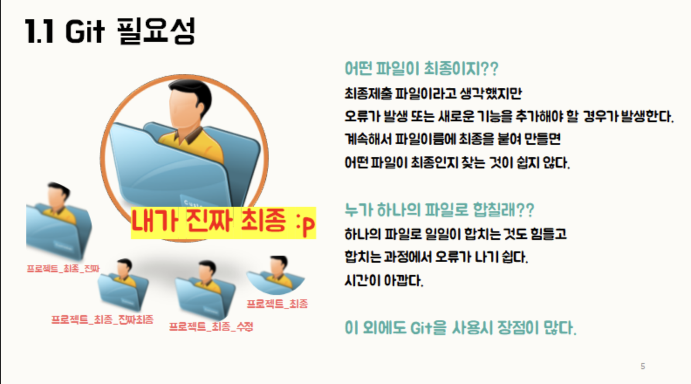

이번 강의 목표
코드를 쌓고 되돌리는 법
- Git이 왜 필요한지 직접 체감하기
- 커밋 · 푸시 · 되돌리기 흐름 한 번씩 해보기
- 내 HTML 프로젝트를 GitHub에 올리기
- Claude Code에게 모든 Git 작업 지시해보기
실전 1강 · Git / GitHub
AI는 코드를 빠르게 많이 바꾼다 그래서 되돌리는 능력이 더 중요해진다 Git은 그 능력이다
이번 강의 목표
수업 전 확인
Git 설치 여부 확인 → git --version
왜 Git이 필요한가

index_final.html
index_진짜최종.html
뭐가 최신인지 모름
AI가 스타일 싹 바꿨는데 더 이상해짐
이전으로 못 돌아감
친구한테 파일 카톡으로 보냄
누가 뭘 수정했는지 모름
노트북 바꿨는데
파일이 거기 없음
핵심 문장
파일 이름으로 버전을 관리하면 결국 지옥이 온다.
Git은 파일 이름은 그대로 두고, 변경 이력을 따로 쌓는다.
핵심 용어 6개
용어 1
프로젝트 전체의 타임캡슐 보관함.
파일만 저장하는 폴더가 아니라, 변경 이력까지 함께 쌓이는 공간이다.
# 현재 폴더를 레포로 만들기
git init용어 2
"지금 이 상태를 저장"하는 스냅샷 찍기.
Ctrl+S는 파일을 덮어쓴다. 커밋은 이전 상태를 기억하면서 새 상태를 쌓는다.
# 파일을 커밋할 준비 목록에 추가
git add .
# 스냅샷 저장 (메시지 필수)
git commit -m "첫 번째 버전"용어 3
GitHub에 있는 온라인 보관함.
내 컴퓨터의 레포와 GitHub 레포를 연결하는 이름이 origin이다.
# GitHub 레포와 연결
git remote add origin https://github.com/assist-11th/내저장소.git용어 4
내 컴퓨터 → GitHub로 올리기.
커밋한 내용을 원격 레포에 반영한다.
git push origin main용어 5
GitHub → 내 컴퓨터로 내려받기.
다른 컴퓨터나 협업자가 올린 내용을 가져올 때 사용한다.
git pull origin main용어 6
두 버전을 하나로 합치기.
지금 단계에서는 "다른 브랜치의 작업을 메인에 합친다"는 개념 정도만 알면 된다.
# 오늘은 개념만 — 실습은 다음 강의
git merge 브랜치이름자주 헷갈리는 것
변경 이력을 관리하는 도구
터미널에서 실행하는 명령어
그 기록을 저장하고 공유하는 공간
브라우저에서 보는 웹사이트
강의용 한 줄
Git이 작업 기록을 남기고, GitHub가 그 기록을 쌓아두는 장소가 된다.
실습 흐름
터미널 명령어를 직접 외우지 않아도 된다. Claude Code에게 지시하면 Git 명령어를 대신 실행해준다.
0–10분 · Step 1
Claude Code에 이렇게 붙여넣기:
내 HTML 프로젝트 폴더를 git 레포로 초기화하고,
현재 파일들을 첫 커밋으로 저장해줘.
커밋 메시지는 "첫 번째 버전"으로.git log로 커밋 기록 확인.git 폴더가 생성됐는지 확인핵심 체험 · 이제 이 프로젝트는 이력이 쌓이기 시작한다
10–25분 · Step 2
먼저 Claude Code에게 지시해서 변경해본다:
index.html의 배경색을 형광 초록으로 바꿔줘.브라우저에서 결과 확인 → 마음에 안 들면:
방금 변경사항을 되돌려줘. git으로.핵심 체험 · 망쳤어도 돌아올 수 있다는 안전감
25–45분 · Step 3
GitHub에서 빈 레포를 하나 만든다 (assist-11th 조직 안에). 그 후 Claude Code에게:
GitHub에 'my-first-project' 이름으로 원격 레포를 연결하고
지금까지 커밋한 것들을 push해줘.
GitHub 레포 주소: https://github.com/assist-11th/my-first-project.git핵심 체험 · 내 프로젝트가 온라인에 쌓인다
45–55분 · Step 4
Claude Code에게:
제목 텍스트를 내 이름으로 바꾸고
커밋 메시지 "제목 수정"으로 커밋한 뒤 push까지 해줘.핵심 체험 · 이력이 쌓이는 감각
55–60분 · 마무리
커밋 한 번
안전망 만들기
커밋 한 번
복구 지점 확보
Push
GitHub에 쌓기
오늘 한 것
과제 (선택)
핵심 · 완벽한 코드보다 커밋 습관
다음 강의 예고
API란 무엇인가
fetch()로 외부 데이터 가져오기
날씨 · 환율 · 공휴일 데이터를 내 HTML에 붙이기
참고 링크